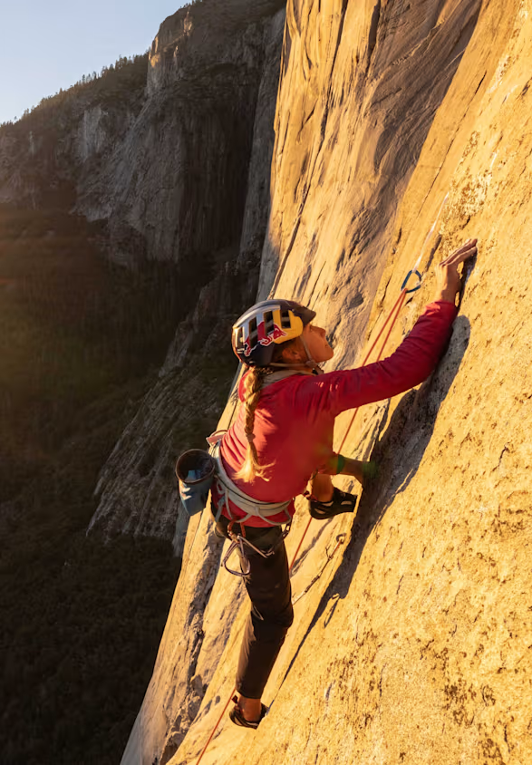

Klettaklifur á sér lengri sögu en margir halda. Það fór að þróast sem íþrótt undir lok 19. aldar og hefur síðan greinst í nokkrar greinar sem eru í raun nokkuð ólíkar, þótt þær snúist allar um að komast upp klett.


Ein leið til að flokka klifur er eftir lengd leiðanna. Í einnar spannar klifri er klifruð ein leið upp að akkeri og síðan sigið niður. Í fjölspannaklifri er haldið áfram, spönn eftir spönn, og klifrarar geta endað hundruð metra yfir jörðu. Stórveggjaklifur er öfgaútgáfan af þessu. Þar eru leiðirnar svo langar að klifrarar gista jafnvel á veggnum, í hengirúmum eða á pöllum sem hanga utan á klettinum.
Einnig er hægt að flokka klifur eftir stíl. Í sportklifri eru boltar þegar komnir í klettinn og línan er klippt í þá á leiðinni upp. Í dótaklifri koma klifrarar sjálfir fyrir tryggingum í sprungum og taka þær með sér aftur. Það krefst meiri reynslu og mikillar þekkingar á búnaðinum. Í hjálparklifri er búnaðurinn beinlínis notaður til að komast upp, ekki einungis til að grípa fall. Ofanvaðsklifur er algengasta byrjendaformið, þar sem línan er fest efst og fallið verður því aldrei langt. Loks er frjálst sólóklifur, klifur án línu og án nokkurrar tryggingar. Það er langhættulegasta form íþróttarinnar og aðeins á færi fárra.
Grjótglíma er síðan sér á báti. Þar eru klifraðar stuttar en oft mjög krefjandi leiðir á steinum eða lágum veggjum, án línu en með dýnu undir. Grjótglíma er líklega vinsælasta form klifurs í dag, ekki síst vegna þess að hún krefst lítils búnaðar og auðvelt er að stunda hana í klifurhúsum allt árið um kring.
Í Reykjavík er einn áberandi grjótglímusalur en hann er staðsettur í Ármúla 23.
Klifur reynir ekki síður á hugann en líkamann. Það þarf að lesa leiðina, skipuleggja hreyfingarnar og halda ró sinni þegar komið er hátt upp. Einmitt þess vegna laðar íþróttin til sín svo fjölbreyttan hóp fólks.